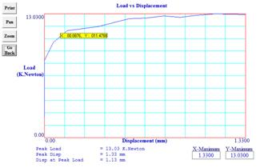

STUDY OF MICRO STRUCTURE CHANGE DURING FRICTION STIR SPOT WELDING OF LAP WELD JOINT USING ALUMINIUM ALLOY
Abstract
Friction Stir Spot Welding (FSSW) can be considered for many of the applications presently performed with traditional resistance spot welding (RSW), the basic concept of FSSW is remarkably simple. This investigation highlights the influence of rotational speed of the tool, and the effect of position of the interface with respect to the tool axis on tensile strength of the friction stir spot welded joint. The axial load is constant between the tool shoulder and the surface of the base material. The rotational speed of the tool axis is continuously changed by keeping the axial load constant. It is found that there is an optimal axial load, above which the weld is defect-free, with joint efficiency of 84% for Al alloy generally. There is a tolerance for interface position; i.e., the tool can be allowed to deviate away from the interface without deteriorating joint efficiency of the weld. The tool can be allowed to deviate from the interface in either side, but the tolerance is higher when the interface is located in the around the tool. Mechanical testing of the spot weld lap joints was performed utilizing the tension-shear configuration. And also evaluate the hardness on the weld spot at the different zone nugget, TMAZ, HAZ and Base plate. Two primary functions that the FSSW tool has serves: (a) heating of work-piece, and (b) movement of material around pin to produce the joint. The heating is accomplished due to the friction between the work-piece and tool and plastic deformation of work piece has taken place. The combined effect of localized heating, tool rotation and axial load, softens the material around the pin. That is why it is called a ‘solid state’ welding process.
Authors:
Abhijit Dey
Dept. of Mechanical Engineering
National Institute of Technology
Silchar, Assam, India
S.C.Saha
Dept. of Mechanical Engineering
National Institute of Technology
Agartala, Tripura, India
K. M. Pandey
Dept. of Mechanical Engineering
National Institute of Technology
Silchar, Assam, India
Paper Transcript of Paper Titled :
STUDY OF MICRO STRUCTURE CHANGE DURING FRICTION STIR SPOT WELDING OF LAP WELD JOINT USING ALUMINIUM ALLOY
Study Of Micro Structure Change During Friction Stir Spot Welding Of Lap Weld Joint Using Aluminium Alloy
Abhijit Dey
Dept. of Mechanical Engineering,
National Institute of Technology,
Silchar, Assam, India
S.C.Saha
Dept. of Mechanical Engineering,
National Institute of Technology,
Agartala, Tripura, India
K. M. Pandey
Dept. of Mechanical Engineering,
National Institute of Technology,
Silchar, Assam, India
Abstract-
Friction Stir Spot Welding (FSSW) can be considered for many of the applications presently performed with traditional resistance spot welding (RSW), the basic concept of FSSW is remarkably simple. This investigation highlights the influence of rotational speed of the tool, and the effect of position of the interface with respect to the tool axis on tensile strength of the friction stir spot welded joint. The axial load is constant between the tool shoulder and the surface of the base material. The rotational speed of the tool axis is continuously changed by keeping the axial load constant. It is found that there is an optimal axial load, above which the weld is defect-free, with joint efficiency of 84% for Al alloy generally. There is a tolerance for interface position; i.e., the tool can be allowed to deviate away from the interface without deteriorating joint efficiency of the weld. The tool can be allowed to deviate from the interface in either side, but the tolerance is higher when the interface is located in the around the tool. Mechanical testing of the spot weld lap joints was performed utilizing the tension-shear configuration. And also evaluate the hardness on the weld spot at the different zone nugget, TMAZ, HAZ and Base plate. Two primary functions that the FSSW tool has serves: (a) heating of work-piece, and (b) movement of material around pin to produce the joint. The heating is accomplished due to the friction between the work-piece and tool and plastic deformation of work piece has taken place. The combined effect of localized heating, tool rotation and axial load, softens the material around the pin. That is why it is called a ‘solid state’ welding process.
Keywords- FSW, FSSW, tool, material, welding and process.
INTRODUCTION
The FSSW process involves only the plunge and retraction of the FSW tool as shown in the diagram in Figure 1. The traverse part of the process is eliminated. The FSSW process mimics the Resistance Spot Welding (RSW) process and can be used in place of RSW, riveting, clinching or any other single point joining processes in many applications [1]. The FSSW process has major variants; one which uses a single sided tool which is comparable to what is known as RSW "Poke" welding and the other involving a C-Frame, which is more like traditional RSW [2, 4]. FSW tool design, and tool orientation and position. Once the proper tool design, rotation speed, travel speed, etc. are selected, this simple process ensures high quality, repeatable welds [3, 5].
Friction Stir Spot Welding (FSSW) is a novel variant of the "linear" FSW process, creates a spot, lap-weld without bulk melting. FSSW can be a more efficient (significant energy and cost savings) alternate process to electric resistance spot welding. FSSW has generated tremendous interests in the automotive industry was used for direct replacement of resistance spot welding of Al alloys [6]. Friction Stir Welding (FSW) is less than 20 years old and Friction Stir Spot Welding (FSSW) has just recently arrived on the scene. Up to now, most of the production applications have focused on nonautomotive means of transportation such as trains, airplanes and boats. Tremendous results have been realized including dramatically improved production, quality, uptime and flexibility [7, 8 and 9].
What if someone invented a welding process that didn't need to melt the base metal to make a joint but is still stronger than conventional processes such as Gas Metal Arc or Resistance Spot Welding? What if this process was lean
(L), mean (M) and green (G), having the characteristics indicated as follows [4, 10].
Improved weld quality (L)
Reduced distortion (L)
Low power requirements (L)
No filler metal or shielding gas required (L)
No unsightly soot (L)
Adaptable to all positions (M)
Fatigue life 2-10 times arc welding (M)
Able to join numerous non-ferrous alloys (even those considered un-weldable) (M)
Mechanical strength of joint equal or close to original base material (M)
Can weld material thickness ranging from 1-50mm+ (M)
Generates no fumes or ozone, i.e. environmentally friendly. (G)
Quiet (G)
No spatter (G)
No ultraviolet light (G)
Reduced need for cleaning of part (i.e. reduced need for chemical cleaning agents) (G)
Note: L = Lean, M = Mean, G = Green
Not possible you say? Well, there is such a welding process and it has been in production for over 20 years. It is called Friction Stir Welding (FSW) and it is making large inroads into the fabrication of trains, airplanes, automobiles, and boats, especially in Europe and Japan. FSW is being used in low and high production situations daily, lowering production costs and improving quality. Let's look at the basics of the process and how it compares to conventional welding processes. After this, we'll review how FSW can best be exploited by discussing a case study which reviews the fabrication of a transportation component [4, 12]. The FSSW process involves only the plunge and retraction of the FSW tool as shown in the diagram in Figure 1. The traverse part of the process is eliminated. The FSSW process mimics the Resistance Spot Welding (RSW) process and can be used in place of RSW, riveting, clinching or any other single point joining processes in many applications. The FSSW process has major variants; one which uses a single sided tool which is comparable to what is known as RSW "Poke" welding and the other involving a C-Frame, which is more like traditional RSW [13].
Figure 1. FSSW with the base plate [3]
WELDING PARAMETERS
For FSSW, two parameters are very important: tool rotation rate (rpm) in clockwise or counterclockwise direction and plunge along the line of joint. The rotation of tool results in stirring and mixing of material around the rotating pin and the translation of tool moves the stirred material from the around the pin and finishes welding process. Higher tool rotation rates generate higher temperature because of higher friction heating and result in more intense stirring and mixing of material as will be discussed later. However, it should be noted that frictional coupling of tool surface with work piece is going to govern the heating. So, a monotonic increase in heating with increasing tool rotation rate is not expected as the coefficient of friction at interface will change with increasing tool rotation rate [15].
In addition to the tool rotation rate, another important process parameter is the downward force with respect to the work piece surface. A suitable depth ensures that the shoulder of the tool holds the stirred material by threaded pin and move material efficiently from the around the pin [7].
Figure 2. (a) Tool 1 and (b) Tool 2.
Tool geometry is also an important parameter for FSSW. For example, the performance with tool shoulders geometries: a flate shoulder with a 10 mm in diameter (Tool 1, Fig. 2.3a). The geometry of the probe for tools is a cylindrical probe with 3 mm in diameter, 1 mm long for the flat shoulder.
FSSW PROCESS AND PARAMETERS SELECTION
The most important control feature is the down force control (Z-axis). It guarantees high quality even if there are tolerances in the materials to be joined. It also enables higher welding speeds, as the down force is main parameter in generating friction to soften the material. The following parameters are to be controlled in Friction Stir spot Welding: Down force, rotation speed of the welding too. So with only two main parameters for the Friction stir spot welding [16, 17].
The joints were performed using the Pillar Friction stir welding Machine. The plunge rate employed in all cases was 1 mm/s with dwell time of 20s and plunge depth of 1.1 mm. The rotational speed was 870 & 1340 RPM. The penetration of the tool was measured by the machine from the position where the tools just touch the upper surface, called scratch position the tools geometry was made in the workshop of NIT, Agartala by using the lathe and grinding wheel, as shown in Figure. The diameters were 16.44 mm for the shoulder and 7.06 mm for the pin. The pin length was 0.88 mm. The torque was measured by rotameter in the Pillar Friction stir welding Machine. The parameters selection was
made according to information obtained in the literature [18]. On the basis of report the stir zone width is very narrow using rotational speeds <1000 RPM without dwell time. Therefore, the welds were performed with the lowest rotational speed and also the maximum (RPM, limit of the developed program for FSSW machine) The plunge depth was increased to 1.88 mm,
and for these evaluations, only the pin was varied, the choose shoulder was 3 Scrolls, and the rotational speed was 870 &1340 RPM.
SELECTION OF WELDING MATERIALS
Aluminum as an engineering alloy is and has been competing with steel for a number of years. It is approximately three times lighter and three times “weaker” (elastic modulus 70 GPa) and has three times higher thermal co-efficient than steel, “The rule of three 3:s”. Weight savings must often be compensated by improved design in order to avoid unnecessary reduction in strength. High thermal co-efficient together with the protective oxide-layer of aluminum makes it tricky to arc-weld. The oxide-layer must be broken and removed, and the heat must be inserted rapidly in order to avoid unnecessary thermal expansion in the products. Of course, with friction stir welding these problems typical to aluminum are avoided. The 6063 alloy is one of the most widely used alloys in the 6000 series. This standard structural alloy, one of the most versatile of the heat-treatable alloys, is popular for medium to high strength requirements and has good toughness characteristics. Applications range from transportation components to machinery and equipment applications to recreation products and consumer durables. The 6063 is intended for structural applications including rod, bar, tube and profiles [19].
TABLE I. MAIN PROCESS PARAMETERS IN FRICTION STIR WELDING.
Parameter |
Effects |
Rotation speed |
Friction heat, “stirring”, oxide layer breaking and mixing |
Down force |
Friction heat |
TABLE II. EXPERIMENTAL PARAMETER.
Parameter |
Range |
|
Rotation speed |
870rpm |
1340rpm |
Down force |
500N |
500N |
The base material used in this work was 2 mm thick Al 6181-T4 sheet, the chemical composition is shown in Table 1. The grains in the as received material were equiaxial.
EXPERIMENTAL PROCEDURE
TABLE III. VICKER’S HARDNESS TESTER MACHINE SPECIFICATIONS.
Parameter |
Supply source |
Testing Pressure |
4.9N (0.5Kgf),9.80N (1Kgf), 29.4N (3Kgf), 49.0N (5Kgf), |
Hardness Value Symbol |
HV5,HV10,HV20,HV30,HV50 |
Pressure Loading & Unloading |
Automatic |
Magnification of Microscope |
200x(for measuring) |
Pressure Holding Time |
5-60s |
Min. Measurable Unit |
0.5μm |
Max. Height of Sample |
160mm |
Main Body Weight |
Approx. 40kg |
Power Supply |
AC220V/50HZ |
Machine Size(L×W×H) |
540×220×650 mm |
THEORY OF TENSILE TESTS
If a test specimen is subjected to an axial load P, as shown in Fig.3 (a), and if the load is increased in increments from zero to the point of fracture, and stress and strain are computed at each step, a stress-strain curve as shown in Fig.3 (b) can be plotted [17].
Figure 3(a). Figure 3(b).
EXPERIMENTAL RESULT OF HARDNESS TEST
TABLE IV. VICKERS’S HARDNESS TEST OF PARENT PLATE, TMAZ, NUGGET AND HAZ FOR SAMPLE AT 870 RPM FOR LAP JOINT.
sample no |
Reading |
diagonal d(mm)
|
test force f/kgf(n) |
rotational |
axial force |
||||
49.03 |
|||||||||
HV 5 |
|||||||||
BP |
HAZ |
TMAZ |
BP |
HAZ |
TMAZ |
870 |
500 |
||
S01 |
A |
0.168 |
0.173 |
0.182 |
329 |
309 |
280 |
||
B |
0.168 |
0.180 |
0.181 |
329 |
286 |
283 |
|||
C |
0.168 |
0.178 |
0.179 |
329 |
292 |
289 |
|||
AVERAGE |
329 |
295.67 |
284 |
|
|||||
TABLE V. VICKERS’S HARDNESS TEST OF PARENT PLATE, TMAZ, NUGGET AND HAZ FOR SAMPLE AT 1340 RPM FOR LAP JOINT.
sample no |
Reading |
diagonal d(mm)
|
test force f/kgf(n) |
rotational |
axial force |
||||
49.03 |
|||||||||
HV 5 |
|||||||||
BP |
HAZ |
TMAZ |
BP |
HAZ |
TMAZ |
1340 |
500 |
||
S01 |
A |
0.168 |
0.201 |
0.213 |
329 |
232 |
204 |
||
B |
0.168 |
0.200 |
0.210 |
329 |
230 |
210 |
|||
C |
0.168 |
0.201 |
0.213 |
329 |
232 |
205 |
|||
AVERAGE |
329 |
231.33 |
206.33 |
|
|||||
CHART I. HARDNESS OF BASE PLATE, TMAZ, NUGGET AND HAZ FOR LAP JOINT AT 870 AND 1340 RPM.
EXPERIMENTAL RESULT FOR TENSILE TEST
Dimesion of the tensile specimen(base plate) and the specimen in the jaw of the tensile machine shown in figure (a) & (b).
Figure 4(a). Figure 4(b).
a. b.
c. d.
Figure 5. BASE PLATE TESILE TEST GRAPH. a. Load vs Displacment, b. Stress vs Strain, c. Load vs Time d. Displacment vs Time.
9. TENSILE TSET FOR LAP JOINT
Dimesion of the tensile specimen, when the specimen in the jaw of the tensile machine and the cross sectional view shown in Fig .6(a), (b) & (c).
Figure 6(a).
Figure 6(b).
Figure 6(c).
AT 870 rpm.
b.
c. d.
Figure 7. TESILE TEST GRAPH FOR LAP WELD AT 870 rpm. A. Load vs Displacment, b. Stress vs Strain, c. Load vs Time d. Displacment vs Time.
AT 1340 rpm.

b.
c. d.
Figure 7. TESILE TEST GRAPH FOR LAP WELD AT 1340 rpm. a. Load vs Displacment, b. Stress vs Strain, c. Load vs Time d. Displacment vs Time .
TABLE 6. TENSILE TEST OF PARENT PLATE, LAP JOINT AND BUTT JOINT SAMPLE AT 1340 RPM AND 870 RPM.
SL. No |
Joint Type |
At rpm |
Maximum Load (KN) |
ΔL |
Stress, (f) |
Strain, (ε) |
Original length |
Tensile Strength |
% of Elongation |
Yield Strength |
(mm) |
(N/mm2 |
(mm/mm) |
(mm) |
|
||||||
1 |
Base plate |
__ |
16.22 |
9.04 |
1622 |
0.1614 |
56 |
1.622 |
0.28 |
1622 |
2 |
Lap joint |
870 |
12.06 |
14.59 |
603 |
0.2605 |
56 |
0.5385 |
0.46 |
603 |
3 |
Lap joint |
1340 |
13.03 |
1.33 |
651.5 |
0.0238 |
56 |
0.6515 |
0.0425 |
651.5 |
CONCLUSION
In this project, Tensile testing were done on 4 sets of Lap and butt in the friction stir spot welding and 1 of the base plate, The results show in table 6.
Yield strength and tensile strength values of four welded specimen are all lower than basic materials (base plate), and extension ratio and plasticity are all lower than basic materials, so the forming capability of welded specimen are decreases.
Yield strength and tensile strength values of lap weld is larger than the butt weld.
And also observed that tensile strength and yield strength at 1340 rpm is higher than the 870 rpm in both the lap and butt weld.
References
FSSW-lean,mean and green Authors: C.B. smith, J.F. Hrnrichs, P.C.Ruehl Friction stir Link W 227 westmound, Wi 53186.
Title: Friction Stir Welding for the 21st Century Automotive Industry, By: J. F. Hinrichs, C. B. Smith, B. F. Orsini, R. J. DeGeorge, B. J. Smale, P. C. Ruehl Friction Stir Link, Inc.Waukesha, WI USA.
H. Schmidt, J. Hattel, J. Wert, Model. Simul. Mater,” An analytical model for the heat generation in friction stir welding,” Sci. Eng. 12 (2004) 143.
Z. Zhang, X. Yang, J. Zhang, G. Zhou, X. Xu, B. Zou,” Effect of welding parameters on microstructure and mechanical properties of friction stir spot welded 5052 aluminum alloy,” Materials & Design, Volume 32, Issues 8–9, September 2011, Pages 4461-4470.
Y.F. Sun, H. Fujii, N. Takaki, Y. Okitsu,” Microstructure and mechanical properties of dissimilar Al alloy/steel joints prepared by a flat spot friction stir welding technique,”Materials & Design, Volume 47, May 2013, Pages 350-357.
L.E. Murr, Y. Li, R.D. Flores, E.A. Trillo,” Effect of Welding Parameters on Weld Formation and Mechanical Properties in Dissimilar Al Alloy Joints by FSW,” Mater. Res. Innovat. 2 (1998) 150.
Y. Li, E.A. Trillo, L.E. Murr,” An overview of Friction stir welded alloys: Microstructure and properties,” Mater. Sci. Lett. 19 (2000) 1047.
Y. Li, L.E. Murr, J.C. McClure,” Effect of Welding Parameters on Weld Formation and Mechanical Properties in Dissimilar Al Alloy Joints by FSW,” Mater. Sci. Eng. A 271 (1999) 213.
Y.F. Sun, J.M. Shen, Y. Morisada, H. Fujii,” Spot friction stir welding of low carbon steel plates preheated by high frequency induction.” Materials & Design, Volume 54, February 2014, Pages 450-457.
W.M. Thomas, E.D. Nicholas, J.C. Needham, M.G. Murch, P. Templesmith, and C.J. Dawes: “Friction Stir Butt Welding,” International Patent Application No. PCT/GB92/02203 and GB Patent Application No. 9125978.8, Dec. 1991, U.S. Patent No. 5,460,317, Oct. 1995.
R.S Mishra, M.W Mahoney, S.X McFadden, N.A Mara, A.K Mukherjee,” High strain rate superplasticity in a friction stir processed 7075 Al alloy,”Scripta Materialia, Volume 42, Issue 2, 31 December 1999, Pages 163-168.
Z.Y. Ma, R.S. Mishra, M.W. Mahoney,” Superplasticity in cast A356 induced via friction stir processing,”Scripta Materialia, Volume 50, Issue 7, April 2004, Pages 931-935.
C.Liang Chen, A. Richter, R. Kögler, L.Tien Wu,” Dual-beam irradiation of friction stir spot welding of nanostructured ferritic oxide dispersion strengthened alloy,” Journal of Alloys and Compounds, Volume 536, Supplement 1, 25 September 2012, Pages S194-S199.
M. James, M. Mahoney, in: Proceedings of the First International Symposium on Friction Stir Welding, Thousand Oaks, CA, USA, June 14–16, 1999.
W.J. Arbegast, in: Z. Jin, A. Beaudoin, T.A. Bieler, B. Radhakrishnan (Eds.), Hot Deformation of Aluminum Alloys III, TMS, Warrendale, PA, USA, 2003, p. 313.
M. Mahoney, R.S. Mishra, T. Nelson, J. Flintoff, R. Islamgaliev, Y. Hovansky, in: K.V. Jata, M.W. Mahoney, R.S.Mishra, S.L. Semiatin, D.P. Filed (Eds.), Friction Stir Welding and Processing, TMS, Warrendale, PA, USA, 2001, p.183.
M.W. Mahoney, C.G. Rhodes, J.G. Flintoff, R.A. Spurling, W.H. Bingel,” Effect of post-welding heat treatments on mechanical properties of double lap FSW joints in high strength aluminium alloys,” Metall. Mater. Trans. A29 (1998)1955.
Y. Tozaki, Y. Uematsu, K. Tokaji, “A newly developed tool without probe for friction stir spot welding and its performance,”Journal of Materials Processing Technology, Volume 210, Issues 6–7, 1 April 2010, Pages 844-851.
B.T. Gibson, D.H. Lammlein, T.J. Prater, W.R. Longhurst, C.D. Cox, M.C. Ballun, K.J. Dharmaraj, G.E. Cook, A.M. Strauss,” Friction stir welding: Process, automation, and control,” Journal of Manufacturing Processes, In Press, Corrected Proof, Available online 15 June 2013.